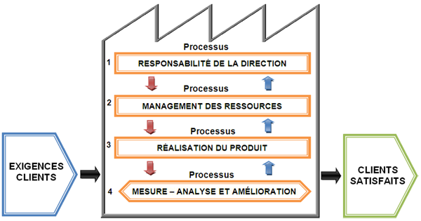

Historique de l'entreprise
C’est en juillet de l’année 1979 que l’unité est entrée dans sa phase
primaire de production, sa mission principale est la production et la commercialisation
des treillis soudé, et des poutrelles métalliques légères,
produits qui jadis étaient l’œuvre de nos artisans ferrailleurs.
TREFAL capitalise
une expérience de plus de 30 ans dans la fabrication des produits destinés principalement
au secteur de l’habitat et des travaux publics
La Qualité
Made of light metal reinforcement smooth extruded wire with a high yielding-good strength and excellent stability,
it has been manufactured as per the "ONORM" standard provided for by the construction regulations approved by CTC.
Certification ISO 9001
Améliorez votre compétitivité grâce à la Qualité
Certification
La certification est un instrument utile qui, en démontrant que votre produit ou service répond aux attentes de vos clients, renforce
votre crédibilité. Dans certains secteurs, elle est même une obligation légale ou contractuelle.
La norme ISO 9001 définit une série d'exigences concernant la mise en place d'un système de management de la qualité dans un organisme,
quels que soient sa taille et son secteur d'activité. Elle fait partie de la série des normes ISO 9000. Elle a été créée en 1987 et est régulièrement révisée depuis.
Sa première révision date de 1994, la suivante de 2000, qui a intégré la notion de processus, et la dernière de 2008. La prochaine révision
est prévue pour être publiée en 2015.
La version en vigueur de ISO 9001 est la version datée de 2008 (11/2008). La prochaine version de la norme devrait être déployée en 2015
et intègrera la notion de maîtrise et d'analyse des risques.
Les exigences y sont relatives à quatre grands domaines :
- Responsabilité de la direction : exigences d'actes de la part de la direction en tant que premier acteur et permanent de la démarche
- Système qualité : exigences administratives permettant la sauvegarde des acquis. Exigence de prise en compte de la notion de système.
- Processus : exigences relatives à l'identification et à la gestion des processus contribuant à la satisfaction des parties intéressées.
- Amélioration continue : exigences de mesure et enregistrement de la performance à tous les niveaux utiles ainsi que d'engagement d'actions de progrès efficaces.
Qualité et performance
Les organismes qui réussissent sont ceux qui s’appuient sur la Qualité : de leur organisation à leur service client en passant par leurs
produits ou services délivrés
S’appuyer sur la Qualité permet à un organisme d’être prêt pour de nouvelles opportunités sur un marché mondial, de plus en plus compétitif.
Certifiez votre système de management de la Qualité d’après la norme ISO 9001 atteste de votre engagement en matière de Qualité et
permet de mesurer vos progrès dans l’amélioration continue de vos performances.
La certification ISO 9001
L’ISO 9001 est une norme internationale de management de la Qualité, utilisable par tous les organismes.
L’ISO 9001 s’appuie sur 8 principes :
- L’orientation client – un organisme dépend de ses clients, il a donc besoin d’adapter ses activités pour répondre à son marché,
- L’implication de la direction – permet de définir des objectifs et une orientation commune,
- L’implication du personnel – créer un environnement où le personnel est impliqué dans les objectifs de l’organisation,
- L’approche processus – pour que les résultats soient atteints, les ressources et les activités doivent être managées comme des processus,
- L’approche système du management – l’efficacité et l’efficience d’une organisation dépendent d’une approche système des activités,
- L’amélioration continue - considérer ce principe comme quotidien est un objectif clé,
- Procédure de décision basée sur des faits – une prise de décision est basée sur des analyses logiques, des données et des informations,
- Des relations fournisseurs mutuellement bénéficiaires.
Les étapes clés de notre approche sont les suivantes :
- Établissement d’un contrat prenant en compte vos spécificités,
- Pré-audit (en option) : analyse des écarts et diagnostic de votre situation actuelle par rapport aux exigences du référentiel,
- Audit de certification en 2 étapes :
- Étape 1 : revue documentaire pour évaluer le degré de maturité du système,
- Étape 2 : audit.
- Comité de certification (édition du certificat),
- Audits de surveillance pour vérifier l’amélioration continue du système,
- Après une période de 3 ans, nouveau contrat de certification.
A chaque étape d’audit, un rapport complet est rapidement délivré. Votre organisme peut ainsi poursuivre l’amélioration des performances
de son système qualité.
Conformité des produits :
Sur le plan qualité, les produits de TREFAL sont contrôlés sur la base des référentiels suivants :
- Pour le TS : Norme NF 35024 ED 2002 : Treillis soudés spécifications
- Pour la PML : Norme ÖNORM B3360 ED 1976 : Armature portant charge
Les produits de TREFAL ont reçu une évaluation technique du CTC (Organisme d’état chargé du contrôle technique de la construction).
Des certificats de conformité sont délivrés par l’entreprise à la demande des clients conformément au décret exécutif N°92-65
du 12 février 1992 relatif au contrôle de la conformité des produits fabriqués localement ou importés : JORA N° 13/92.
TREFAL est dotée d’un laboratoire de contrôle qualité chargé du :
- Contrôle des caractéristiques mécaniques sur le fil machine et le fil tréfilé.
- Contrôle des joints soudés (Essais d’arrachement et de cisaillement) sur le TS et la PML.
- Contrôle dimensionnel des produits (Diamètre, longueur, largeur).
- Suivi d’un programme d’étalonnage et de vérification des instruments de mesures et d’essais (Métrologie).
Management de la qualité a TREFAL :
Dans le cadre de la mise a niveau avec les impératifs d’une économie de marché, TREFAL a l’instar des autres entreprises
s’est inscrite au début de l’année 2002 dans la mise en place d’un système de management de la qualité.
Après avoir répondu aux exigences de la norme ISO 9001et à l’issue d’un audit initial effectué par l’organisme AÏB / Vinçotte,
TREFAL s’est vue décernée la certification de son SMQ en mai 2004 pour une durée de trois années.
Elle a été recertifiée a l’issue d’un audit externe réalisé avec succès le 27/07/2007.
TREFAL vise a l’accroissement de la satisfaction de ses clients en respectant les exigences légales et réglementaires applicable pour son activité.
Dans le cadre de la mise a niveau des entreprises dus aux changements perçus dans le nouveau paysage économique caractérisé par :
- Un marché fortement concurrentiel.
- Des exigences clients évolutives.
- Des contraintes de la mondialisation.
Et les nouvelles technologies de l’information et de la communication (NTIC).
Les entreprises doivent pour survivre renforcer leur compétitivité, améliorer leurs résultats et consolider leur pérennité.
L’approche processus préconisée par la norme ISO 9001, constitue une des réponses pour engager cette démarche. Dont la finalité
est la satisfaction des besoins et attentes de ses clients. Elle nous amènera aussi à réfléchir sur ce que nous produisons, comment, pourquoi et pour qui ?
L’entreprise ne sera plus vue dans son aspect uniquement fonctionnel, mais bien mieux elle constitue réellement un réseau de
processus corrélés ou interactifs.
Contrôle de la Qualité
Le contrôle qualité fait partie des procédés de développement d’ingénierie et de fabrication afin que les produits conçus et
fabriqués répondent aux exigences des clients ou restent dans des tolérances préalablement définies. Le contrôle qualité
fait partie de la gestion intégrale de la qualité.
Le rôle du contrôleur qualité est déterminant pour garantir la conformité des produits et garantir la qualité livrée au client
Ses missions sont multiples : définir et mettre en œuvre les différentes procédures garantissant la qualité des produits,
suivre le contrôle des matières premières, des moyens de production, des produits semi-finis et des produits finis,
participer à l'amélioration des procédés de fabrication, de l'organisation de la production et des équipements productifs...
Vérifier si la fabrication a bien livré un produit conforme aux spécifications en vigueur.
Le rôle du service qualité est donc de :
- Mesurer les niveaux de qualité,
- Informer les services fabrication et installation qui définissent leurs actions correctives en fonction des résultats de mesures émis par le service qualité,
- Informer les directions : Sur les niveaux de qualité, les actions correctives, les coûts de la qualité.
Le laboratoire d’analyses et d’essais mécanique
Notre laboratoire d’analyses et d'essais regroupe toutes les compétences permettant de maîtriser la qualité de nos produits.
Notre réactivité ainsi que flexibilité nous permettent une rapide mise en œuvre de solutions adaptées pour répondre à vos besoins.
A l’aide de matériel étalonné, nous procédons à de nombreux tests mécaniques :
Sollicitations en traction, et arrachement sur machine ZWICK / Roell 100kN.
TREFAL réalise des essais réguliers de traction sur pièces et éprouvettes afin de mesurer ou tester la résistance des
matériaux. Pour cela le laboratoire d'essai mécanique est équipé d'une machine de traction étalonné permettant d'appliquer des efforts allant de 0,5 à 100KN.
Nous garantissant :
- Un personnel compétent et bien formé en contrôle qualité
- La conformité des produits
- La qualité livrée au client.
- Les supports de suivi et de traçabilité des contrôles et des produits en fonction des Normes, et des exigences clients.
- Les résultats et la traçabilité de tous les essais mécanique en fonction des spécifications et exigences clients.
- Des essais mécaniques qui ont pour but d’évaluer le comportement d’un produit dans des conditions réelles d’utilisation en lui appliquant des contraintes mécaniques
- Les mesures dimensionnelles par des instruments de contrôles étalonnés.
- Nos produits sont évalués par CTC.
contactez -nous
BP 151, Zone Industriel De Réghaia, Alger - Algerie.
Service commercial : 0561 650 682 / 0561 650 682
Direction Marketing : 0561 774 887 / 0561 656 406
E-mail : unite.trefal@entpl.dz
la direction : 0561 650 676
Fax : 023 96 59 32
Tél : 023 96 58 72
TREFAL ©2023-made by abdelmoula sellam